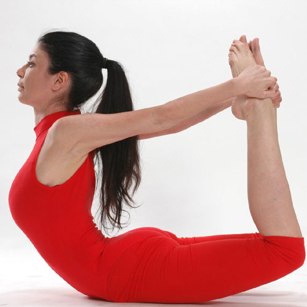

DHANURASANA
How To Do Dhanurasana
Lie on your stomach with your feet hip-width apart and your arms by the side of your body.
Fold your knees, take your hands backwards and hold your ankles.
Breathing in, lift your chest off the ground and pull your legs up and back.
Look straight ahead with a smile on your face
Keep the pose stable while paying attention to your breath. Your body is now curved and taut as a bow.
Continue to take long deep breaths as you relax in this pose. But bend only as far as your body permits you to. Do not overdo the stretch.
After 15 -20 seconds, as you exhale, gently bring your legs and chest to the ground. Release the ankles and relax.
Benefits Of The Bhujangasana :
Strengthens the back and abdominal muscles
Stimulates the reproductive organs.
Opens up the chest, neck and shoulders
Tones the leg and arm muscles.
Adds greater flexibility to the back.
Good stress and fatigue buster.
Relieves menstrual discomfort and constipation.
This asana is known to open up the lungs and the heart.
Helps people with renal (kidney) disorders.
Caution:
Do not practice Dhanurasana (Bow Pose) if you have:
High or low blood pressure
Hernia
Neck injury
Pain in the lower back
Headache migraine
Recent abdominal surgery